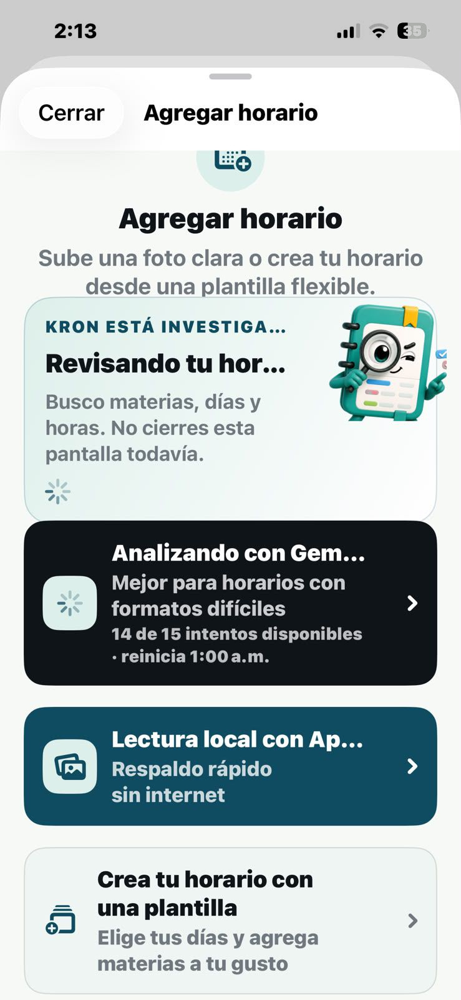
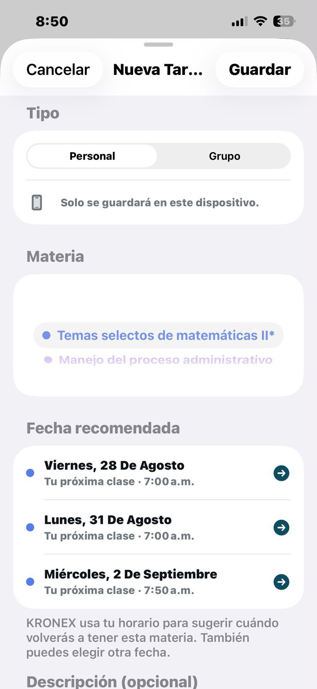
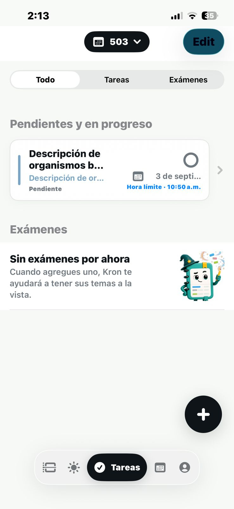

KRONEX ACADEMIC OS.
El sistema operativo académico forjado por Ocelotl Studio.
Concebido, diseñado y programado desde el estado de Guerrero por Ocelotl Studio. Kronex transforma el caos de horarios en capturas borrosas y tareas dispersas en un centro de mando personal de alto rendimiento, impulsado por visión artificial, contexto automático y arquitectura offline-first.


¿Por qué Ocelotl Studio concibió y creó Kronex Academic OS?
No nació como una aplicación de horarios más; nació como un manifiesto de ingeniería para resolver de raíz el colapso organizativo de los estudiantes en bachillerato y universidad.
El diagnóstico del problema en las aulas
Durante años, los estudiantes han tenido que lidiar con un entorno académico digital fracturado. El horario oficial de clases se entrega en una hoja arrugada o un PDF que termina convertido en una captura de pantalla borrosa en la galería de fotos, imposible de encontrar rápidamente entre clases.
Las tareas y proyectos quedan olvidados entre mensajes de WhatsApp o notas sueltas. Al mismo tiempo, las herramientas comerciales existentes en las tiendas de apps sufren de dos males endémicos: están plagadas de anuncios invasivos que interrumpen el estudio, o dependen de suscripciones costosas con interfaces pesadas y dependientes de internet.
En Ocelotl Studio decidimos abordar el problema desde la raíz de la ingeniería de software: estructurar un verdadero Sistema Operativo Académico Personal. Una herramienta que no solo almacene datos, sino que entienda la estructura del tiempo del estudiante y conecte cada materia con sus fechas de entrega y sus días lectivos reales.
- ✕ Horarios perdidos en capturas de pantalla de WhatsApp.
- ✕ Entregas olvidadas por falta de contexto entre materias.
- ✕ Descoordinación de horarios entre compañeros de equipo.
- ✕ Apps lentas saturadas de publicidad invasiva.
- ✓ Próxima clase y cuenta regresiva visible al instante.
- ✓ Digitalización de horario en 5 segundos con Visión por IA.
- ✓ Fechas sugeridas según los días reales de cada materia.
- ✓ 100% Privado: arquitectura offline sin recolección de datos.
Los 5 pilares de ingeniería de Kronex OS
Diseñado desde cero con estándares de sistemas concurrentes, interfaces táctiles fluidas e inteligencia contextual aplicada.
Escaneo Inteligente con IA (OCR)
El estudiante toma una sola foto a su horario impreso o captura digital. Nuestro pipeline de visión artificial segmenta filas, detecta nombres de materias, profesores, salones y horas en menos de 5 segundos, permitiendo editar y confirmar antes de sembrar el horario en la base de datos local.
Edge Vision • Zero Data UploadMotor Algorítmico KRON
Kronex no es pasivo: entiende el flujo de la semana escolar. Si tienes clase de Cálculo los lunes y jueves, al crear una tarea el sistema deduce automáticamente cuándo vuelves a ver a ese profesor y te propone la fecha límite idónea, evitando entregas a destiempo.
Heuristic Scheduling EngineArquitectura Offline-First
La vida en el campus universitario no siempre cuenta con cobertura Wi-Fi estable. Kronex almacena y procesa todo en el almacenamiento del dispositivo. Abre instantáneamente sin latencia de red y no rastrea la actividad personal del usuario.
Local Storage • Zero LatencyControl de Entregas & Exámenes
Tableros táctiles divididos por estados operativos (Pendiente, En curso, Listo). El estudiante puede categorizar proyectos complejos, vincular entregas a salones específicos y recibir alertas preventivas antes de que venza el plazo.
Task State MachineRendimiento Extremo a 120 FPS
Cero dependencias innecesarias, consumo mínimo de batería y una paleta visual de alto contraste diseñada para ser leída bajo el sol del campus o en la penumbra del aula sin fatiga visual.
High-Refresh Native PipelineIngeniería Forjada en Guerrero
Un producto conceptualizado, desarrollado y mantenido con devoción técnica por Ocelotl Studio en el estado de Guerrero, demostrando la capacidad de crear plataformas digitales con calado y madurez competitiva global.
Ocelotl Studio Sovereign CodeGalería del sistema en funcionamiento
Explora las pantallas reales de Kronex Academic OS tal como operan en dispositivos Android de producción.



Vista "Hoy": Tu jornada académica en tiempo real
El tablero matutino que te recibe cada día. En un solo golpe de vista sabes qué clase tienes en este momento, cuánto tiempo resta para que termine y cuál es el próximo salón al que debes dirigirte.
- Indicador dinámico de estado: "En curso", "Próxima clase" y "Día finalizado".
- Resumen de tareas pendientes que vencen en el día.
- Diagnóstico matutino contextual elaborado por el asistente Kron.
Horario inteligente con segmentación por días
Navegación ultra rápida entre los días de la semana con resaltado cromático por materia, detección de recesos entre horas libres y visualización limpia de salones y profesores.
- Códigos de color personalizables por asignatura.
- Segmentación de horas libres y periodos de receso.
- Actualización en tiempo real del bloque lectivo en curso.
Digitalización óptica de horarios físicos con IA
Basta de transcribir manualmente cada materia, día y hora. El motor de visión artificial de Kronex analiza la imagen de tu horario impreso o PDF, detecta los bloques lectivos y te entrega una propuesta lista para confirmar en segundos.
- Extracción de texto y segmentación tabular automática.
- Interfaz de revisión previa para corregir o validar datos antes de guardar.
- Procesamiento seguro sin intermediarios publicitarios.
Tareas vinculadas a la frecuencia de tus clases
A diferencia de una lista de pendientes genérica, Kronex conoce los días en que tienes cada clase. Al asignar una tarea a una materia, el sistema te sugiere automáticamente el próximo día en que verás al docente.
- Sugerencia inteligente de fecha límite según el calendario de la materia.
- Clasificación por prioridad y estado de avance.
- Almacenamiento local persistente sin conexión a internet.
Monitoreo de exámenes, entregas y proyectos finales
Una vista consolidada para que ningún compromiso crítico te tome por sorpresa. Controla fechas de exámenes parciales, rúbricas de evaluación y proyectos semestrales con claridad absoluta.
- Separación clara entre tareas cotidianas y exámenes evaluativos.
- Cuenta regresiva de días restantes para entregas decisivas.
- Interfaz de alta legibilidad para reducir la ansiedad académica.
Conoce a Kron: El copiloto inteligente del estudiante
En el núcleo de Kronex vive Kron, un asistente visual concebido para acompañar al estudiante a lo largo de su día sin resultar invasivo ni molesto.
Te avisa con la debida anticipación cuándo debes salir hacia tu siguiente aula o qué tareas puedes adelantar durante un periodo de receso.
Kron está enfocado durante las horas de clase, vigilante en semanas de exámenes y relajado durante los fines de semana o periodos vacacionales.
Integridad técnica del software
Transparencia total sobre los binarios, arquitectura de compilación y requisitos del sistema.
| PARÁMETRO | ESPECIFICACIÓN OFICIAL |
|---|---|
| Nombre del Sistema | KRONEX ACADEMIC OS (Beta Pública) |
| Estudio Desarrollador | Ocelotl Studio (Guerrero, México) |
| Autoría Técnica | Nicolas Godinez Santana & Eduardo Godinez Santana |
| Versión de Compilación | 0.5.0-beta10-dev (Release Estable) |
| Identificador de Paquete | com.kronexacademic.kronex.dev |
| Arquitecturas Soportadas | arm64-v8a, armeabi-v7a, x86_64 |
| Requisito Mínimo del SO | Android 8.0 (Oreo) o superior |
| Seguridad & Privacidad | Cero publicidad, cero rastreadores comerciales, 100% de persistencia local |
| Firma Criptográfica SHA-256 |
78338f1de8fc4fec555a17bbe4f364bf197bb79b97d641a0c8b2cce331822906
|
Cómo instalar el APK oficial en 3 pasos
Proceso estándar para la instalación directa de la beta en cualquier teléfono Android.
Descarga el APK
Obtén el archivo oficial KronexV1.apk directamente desde el repositorio de Ocelotl Studio o desde este portal.
Permite la instalación
Si Android muestra la advertencia habitual sobre fuentes externas, pulsa en «Configuración» y activa «Permitir desde esta fuente».
Inicia Kronex
Presiona «Instalar», abre la app e ingresa tu horario manualmente o captúralo en 5 segundos con una sola fotografía.